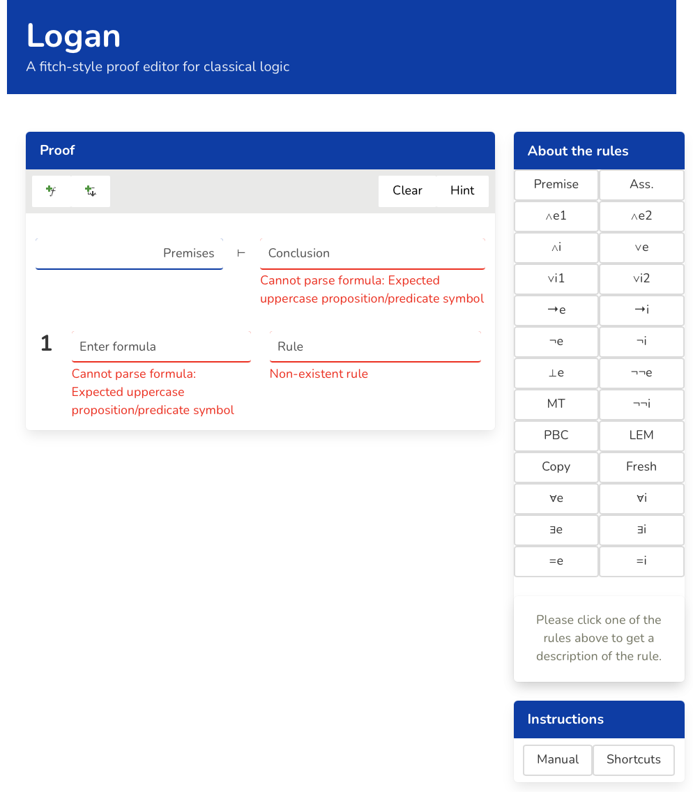
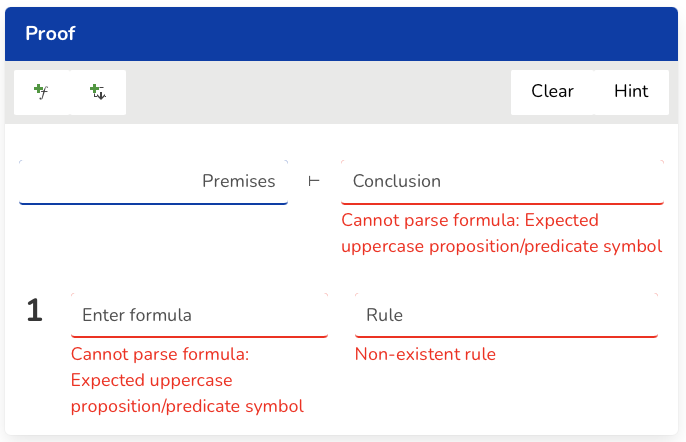
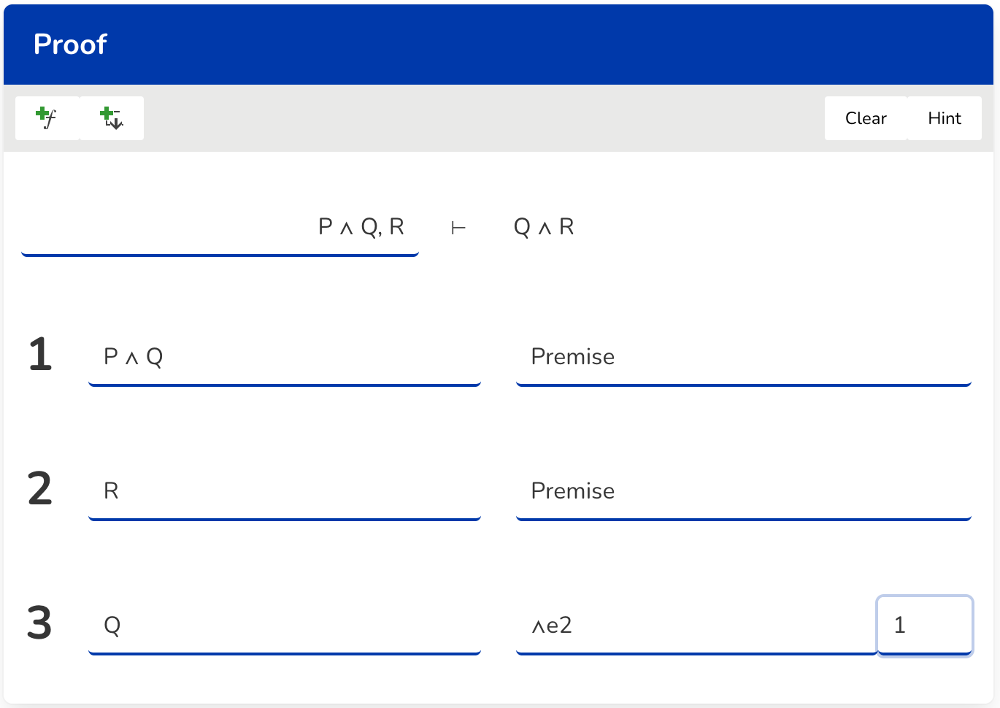
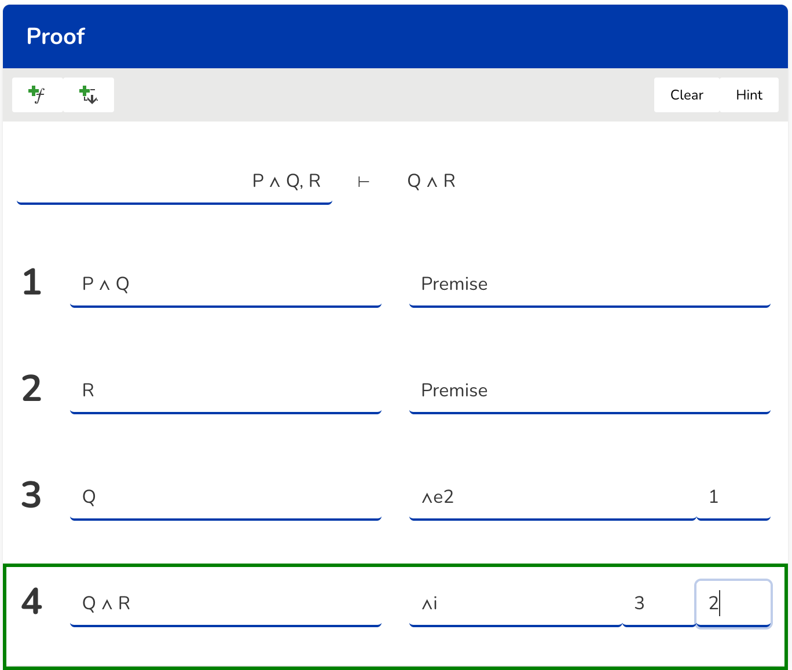
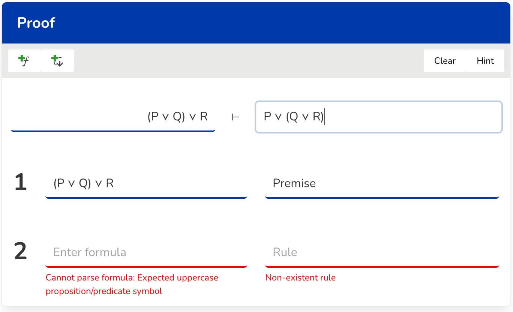
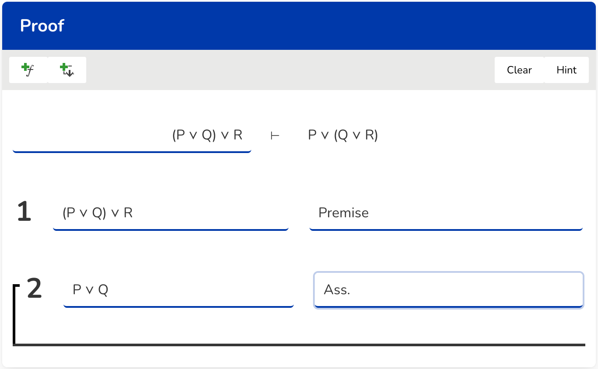
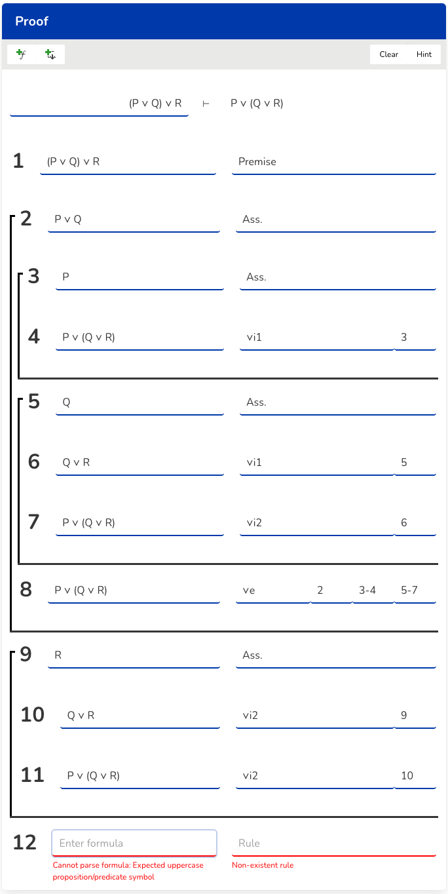
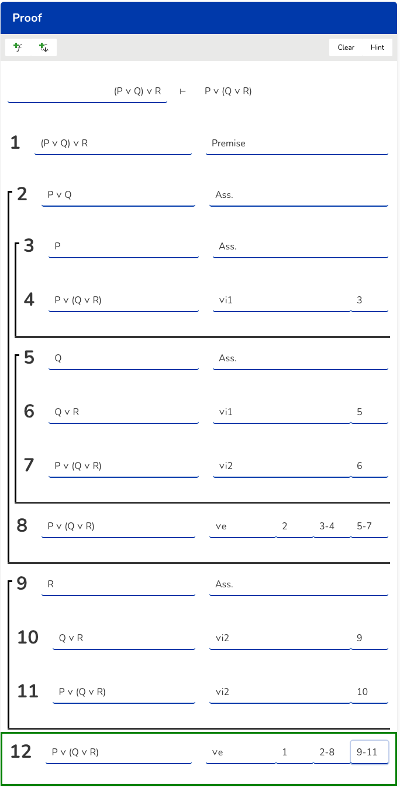

Manual
This manual will give a brief explanation on how to do proofs in this editor. This will be done by using a step by step "learn by example" paradigm by solving basic sequents. When starting the program, you are greeted with the following layout: 
The proof column is where the construction of proofs will take place, while the rule column simply lists the inference rules defined in this calculus where clicking on the buttons will give a brief explanation on what they do. The settings column lists this manual whose button you have clicked on because you are here =) , and the shortcut button lists various shortcut keyboard commands used when constructing proofs. An understanding of these shortcuts is needed to be able to know what to type for specific symbols, rules and how to navigate when constructing proofs. In this section, we will for learning purpose write down each command shortcut involved in the process of constructing said proofs. But later when you want to prove sequents that have symbols and rules involved not present in these examples, it is necessary to check the shortcut page to learn how to type them.
Example: P∧Q , R ⊢ Q∧R
Initially the proof panel looks like this: 
Always when trying to prove a sequent, an input of the conclusion needs to be supplied to let the editor know what we are trying to conclude. In its initial state, we see that the conclusion part and the row below is highlighted with a red colour which defines some kind of error. For a more thourough explanation on errors, check the error section: .
We start by adding the conclusion by typing QorR in the conclusion field and also the premises by executing the following sequence:
PanQ in the formula field, and pr in the rule field.
Then pressing enter will add a new row.
And on the current row inputing R and pr in the formula, respectively the rule field.
Now it should be clear how to add rows and on each row we have a formula field and a rule field. Next step is to perform a conjunction elimination 2 by typing in the following formula Q and rule ane2 1: 
Lastly we add a new row and type an and introduction by typing in the following formula QanR and rule ani 3 2: 
We have successfully proven the sequent P∧Q , R ⊢ Q∧R using the editor. The last row is highlighted with a green color to indicate that the conclusion has been reached and is a valid proof. But what now? No assumptions or maybe an or elimination rule was involved that usually trips people up in introductory logic courses. Lets make it more interesting and prove a harder sequent containing these aspects.
Example: (P∨Q)∨R , R ⊢ P∨(Q∨R)
Start by adding the conclusion and the premise by typing Por(QorR) in the conclusion field, and (PorQ)orR , pr in the formula field and rule field at row 1. 
Add a new row and type PorQ in the formula field and as in the rule field. This opens up a new assumption box with its own scope and assumed formula at the top row. Something to note is that currently when pressing enter, you will add rows inside this box. 
We will now add two new assumptions inside the box we created, because we are going to perform a disjunction elimination at row 2 eventually. To add these assumptions and the inference rules involved, type in the following sequence:
Row 3: Formula field: P Rule field: as
Row 4: Formula field: Por(QorR) Rule field: ori1 3
The first assumption box is now finished and we want to add new rows outside of this box. Simply pressing enter doesnt work because it adds new rows inside of it as discussed before. The shortcut we are looking for is to press alt+enter. Now we do the second assumption and the inference rules involved by writing the sequence:
Row 5: Formula field: Q Rule field: as
Row 6: Formula field: QorR Rule field: ori1 5
Row 7: Formula field: Por(QorR) Rule field: ori2 6
The current state of the proof should now look like this:
Now we press shift+enter to get outside of the current box and add a new row. At this row we also input Por(QorR) and ore 2 3-4 5-7.

Add a new assumption box and inference rules inside of it by doing:
Row 9: Formula field: R Rule field: as
Row 10: Formula field: QorR Rule field: ori2 9
Row 11: Formula field: Por(QorR) Rule field: ori2 10 and lastly shift+enter. It should look like this: 
We finish of the proof by adding the following Por(QorR) and ore 1 , 2-8 , 9-11 which completes the proof: 
Phew! This was a little harder than the first one but now you should have enough information about how to navigate and how the editor works by constructing various proofs. Remember to read the shortcuts if you havnt to learn the various ways of constructing different symbols and rules that havn't been applied on these two example proofs. The best is now to keep on practicing by solving various sequents! Have fun!